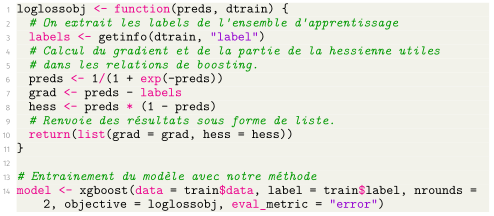

Exemples de codes
Fonction de perte personnalisée
Nous avons à plusieurs reprise mentionné la possibilité d'utiliser les fonctions de pertes personnalisées avec XGBoost. Un exemple est fournit ci-dessous où l'on définit manuellement la fonction de log-vraissemblance pour la perte. La mesure de log-vraissemblance fait en réalité partie des options possibles par défaut dans XGBoost, elle est cependant présentée sous cette forme « manuelle » ici à titre d'exemple. Pour mémoire, la manière de l'appeler serait de faire objective = "binary:logistic".
Cet exemple est réalisé en R, mais le fonctionnement sera le même pour d'autres langages.

On remarque donc que la définition est des plus simples (tant que l'on peut trouver des expressions algébriques...), dans la mesure où les seuls éléments demandés sont de pouvoir exprimer le gradient et la hessienne de la fonction de perte.